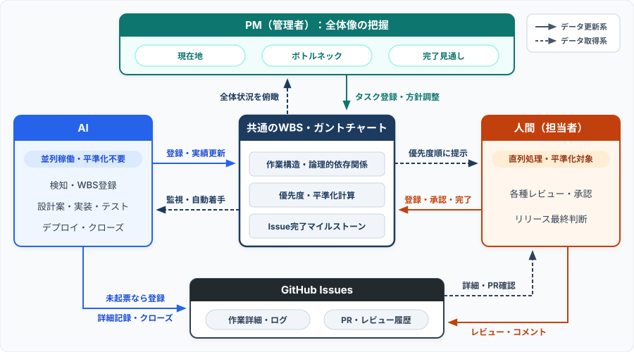
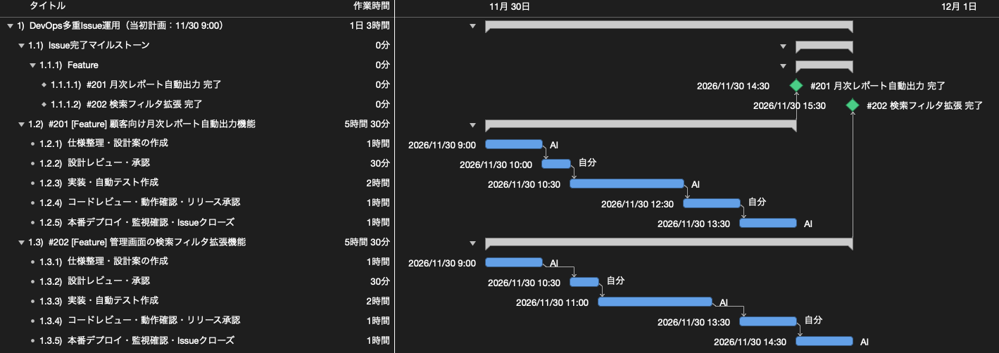
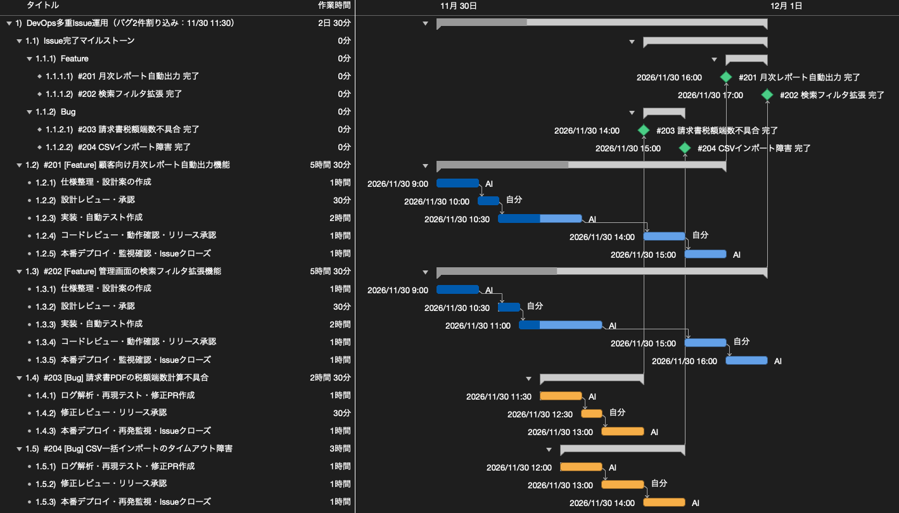
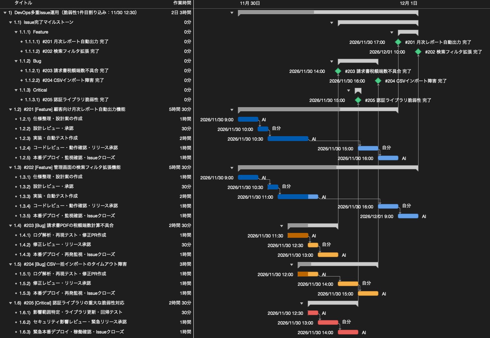
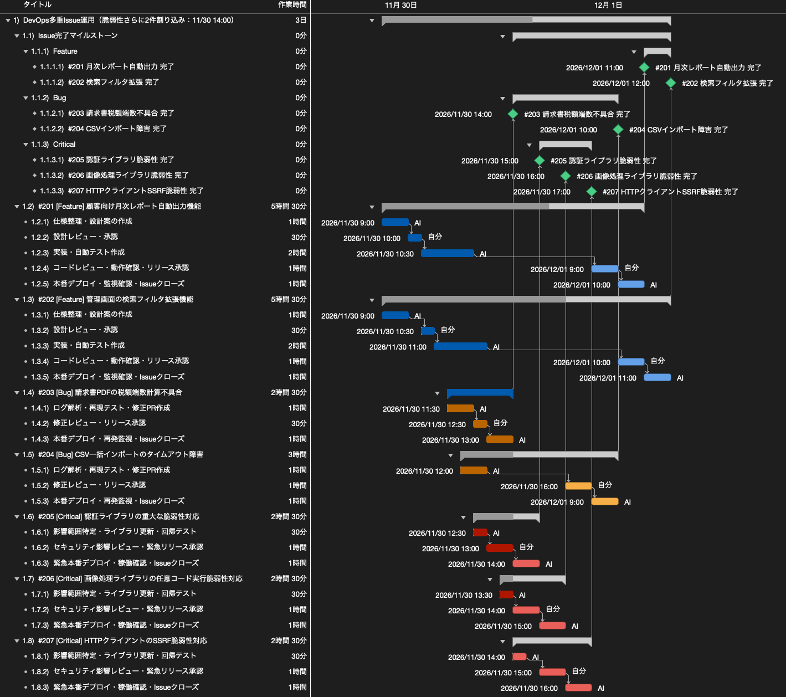
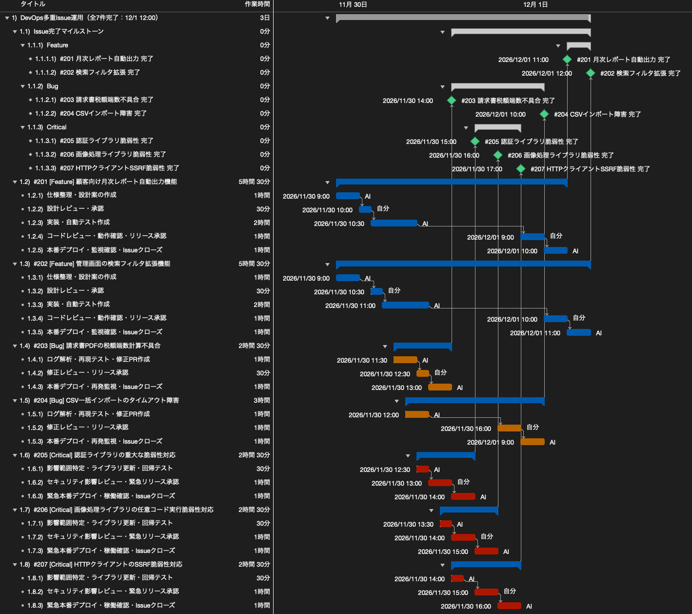

AI駆動開発におけるWBSとガントチャートの使い所
2026年11月現在、AIによるコード生成や自動テストが当たり前になり、開発の現場は大きく変化しています。AIが実作業の多くを担うようになると、一つひとつの作業時間は短くなり、リソースの平準化も不要に見えてきます。そのため、私自身も「AI駆動開発においてはWBSやガントチャートはもはや不要になり、シンプルなTodoリストで事足りるのではないか」と考えていました。
しかし、いざWBSをなくす前提で考えてみると、WBSが本来担っている「全体の見通し（未来予測）」が失われることに懸念が残ります。仮に人の作業が残るのであれば、人がボトルネックになるのは明らかであり、それも含めた上で全体の見通しを立てる必要があります。また、将来的に人が完全に関与しなくなったとしても、WBSを通じてAIの作業を時系列に可視化し、進捗や完了時期を把握する必要性は残るのではないでしょうか。そう考えると、WBSは不要になるのではなく、これからはAIとともにWBSを育てていく必要があるのではないかと思い至りました。
本記事では、そうした考えのもと、複数のIssueが並行する開発・運用の実例を用いながら、AI駆動開発におけるWBSとガントチャートの必要性について整理してみたいと思います。
1. AI駆動開発で変わるもの・変わらないもの
WBSとガントチャートには、大きく分けて「作業の網羅と構造化」「着手順序の設計」「時間軸での平準化と未来予測」という3つの役割があります。AIが開発の主力を担うようになっても、これらの役割がすべて不要になるわけではありません。
作業の網羅と論理的依存関係は消えない
まず、作業の漏れを防ぐ構造化（WBSそのもの）は、AI駆動開発においてむしろ重要度が増します。AIは指示された対象を高速に生成するため、全体像を整理しないまま走り出すと、例外処理や回帰テスト、本番監視、Issueのクローズといった周辺工程が抜け落ちやすくなるためです。
次に、タスク間の論理的な依存関係も消えません。AIは複数のタスクを同時に並列処理できるため、人間のように「1つ終わるまで次の作業に着手できない」という制約はありません。しかし、設計の承認を得る前に実装へ進んだり、人間のレビューや回帰テストを飛ばして本番デプロイを行ったりするわけにはいきません。順序の制約そのものは、作業の担い手がAIに代わってもそのまま残ります。
平準化の対象はAIから「人間のボトルネック」へ移る
AI駆動開発で最も大きく変化するのは、時間軸における平準化の対象です。従来の開発では実装を担当する人間の稼働を平準化することが中心でしたが、AIが調査・設計案の作成・実装・修正プルリクエストの作成を並列で次々と終わらせるようになると、ボトルネックは明確に人間側へ移ります。
設計の承認、コードレビュー、セキュリティ影響の確認、本番リリースの最終判断といった責任を伴う工程は、依然として人間が1つずつ処理する必要があります。AIが高速に動くほど人間のレビュー待ち行列は膨らみやすくなり、割り込み案件が重なった際に「もともと進めていた機能開発はいったいいつ終わるのか」という見通しが立たなくなります。だからこそ、人間の帯域を平準化し、完了時期を論理的に算出するガントチャートの役割が改めて重要になります。
2. AIと人間が共通のWBS・ガントチャートをメンテナンスする運用モデル
日々のシステム運用では、課題管理ツール上のIssue一覧でタスクを管理する現場が多く見られます。しかし、Issue一覧だけでは複数案件が並列に並ぶだけであり、人間のレビュー枠がどこで渋滞しているのか、割り込みによって他のIssueのリリース予定がどれだけ後ろにずれるのかを把握することは困難です。
そこで有効になるのが、論理的依存関係と優先度、平準化の設定を備えたガントチャートを、AIと人間が共通でメンテナンスする運用モデルです。WBSへのタスク登録はAIに限らず、新規の機能開発や追加の対応事項はPMや人間からWBSへ登録され、日々の運用で検知された不具合や脆弱性はAIから標準工程のWBSとして自動登録されます。
AIはWBSを継続的に監視しており、誰から追加されたタスクであっても、依存関係が解消された作業から自動的に並列着手します。その際、対応するIssueがまだ存在しない場合はAIがWBSを起点にIssueを起票し、調査内容や設計案、実装・テストの詳細をIssue上へ記録しながら処理を進めます。一方、人間のレビューやリリース承認のタスクは、ガントチャートの平準化機能によって優先度順に直列へ並べられます。人間がレビューを終えて完了を記録すると、WBSを監視しているAIがそれを検知し、後続のデプロイや監視確認、Issueクローズを自動で引き継いで完了させます。
このサイクルを共通のWBS上で回すことで、割り込みが何度発生しても、管理者はガントチャートを見るだけで「いま何が進行中で、人間の待ち行列がどう並んでおり、当初の計画はいつ完了する見通しなのか」を常に把握できるようになります。AI・人間・共通WBS・ガントチャート、そして全体像を俯瞰するPM観点の関係を整理したのが図1です。

3. ケーススタディで見る多重Issue運用の推移
この運用モデルの動きを具体的に確認するため、WebサービスのDevOps運用を題材にケーススタディを作成しました。リソースは並列稼働する「AI」と、同時に1タスクのみを処理する人間側の「自分」の2つを設定し、人間の稼働時間は平日9時から17時（1日8時間）としています。AIとは異なり稼働時間の制約がある人間は、同時処理数だけでなくこの稼働枠の面からもボトルネックになります。なお、人間の作業は30分または1時間単位、AIの作業は30分から2時間単位としました。
登場するIssueは、当初計画のフィーチャー開発2件（#201、#202）に加え、途中で検知されるバグ対応2件（#203、#204）、さらに昨今のセキュリティ情勢を踏まえた重大な脆弱性対応3件（#205、#206、#207）の計7件です。WBS上の並びは当初計画に対して発生順に下へ追加する構成とし、平準化の優先度は「Critical（脆弱性）」「Bug（バグ）」「Feature（フィーチャー）」の順に高く設定しています。最上部には種別ごとにグループ分けしたIssue完了マイルストーンを配置し、当初進めていたフィーチャー2件の完了予定がどのように変化していくかを5つの時点で追います。
① 当初計画（11月30日 9時）
朝9時の開始時点では、フィーチャー開発の2件（#201 月次レポート自動出力機能、#202 検索フィルタ拡張機能）のみが計画されています（図2）。それぞれ「仕様整理・設計案の作成（AI）」「設計レビュー・承認（自分）」「実装・自動テスト作成（AI）」「コードレビュー・動作確認・リリース承認（自分）」「本番デプロイ・監視確認・Issueクローズ（AI）」の5工程で構成されています。
9時の開始と同時に、AIは2件の設計案作成を並列で実行して10時に終えます。続く設計レビューは人間の1名体制であるため平準化によって直列に並び、#201を10時から10時30分、#202を10時30分から11時に処理します。実装は再びAIが並列で進め、コードレビューを人間が順に消化することで、当初計画では#201が11月30日14時30分、#202が11月30日15時30分と、2件とも当日中に完了する見通しになっています。

② バグ2件の割り込み（11月30日 11時30分）
フィーチャー2件の設計レビューが終わり、AIが実装と自動テストを進めている最中の11時30分に1件目のバグ（#203 請求書PDFの税額端数計算不具合）、続いて12時に2件目のバグ（#204 CSV一括インポートのタイムアウト障害）が検知されました（図3）。AIはIssueを起票すると同時に、WBSの下へオレンジ色で示したバグ対応タスク群を高優先度で自動登録します。
AIはフィーチャーの実装と並行してバグ2件のログ解析・再現テスト・修正プルリクエスト作成を即座に終わらせます。しかし、人間のレビュー枠は1つしかないため、再平準化によって優先度の高いバグ2件の修正レビューがフィーチャーのコードレビューより前へ割り込みます。この結果、#201の完了予定は14時30分から16時へ、#202の完了予定は15時30分から17時へと1時間30分ずつ後ろ倒しになりました。

③ 脆弱性1件目の最優先割り込み（11月30日 12時30分）
12時30分、人間が1件目のバグ（#203）の修正レビューに着手したタイミングで、AIが重大な脆弱性（#205 認証ライブラリの重大な脆弱性対応）を検知しました（図4）。AIは赤色で示した脆弱性対応のタスク群を最優先でWBSへ追加し、#203のレビューと並行して30分で影響範囲の特定・ライブラリ更新・回帰テストまでを完了させます。
13時に#203のレビューが終わると、人間の枠には2件目のバグ（#204）よりも優先度の高い#205のセキュリティ影響レビューが最優先で割り込み、当日15時に緊急本番デプロイまで完了する計画へ組み替わります。そのしわ寄せでバグ2件目とフィーチャー2件がさらに押し出され、#201の完了予定は17時、#202の完了予定はついに当日枠から溢れて翌日12月1日10時へと変化しました。

④ 脆弱性さらに2件の連鎖割り込み（11月30日 14時）
14時時点では、1件目のバグ（#203）が本番デプロイとIssueクローズまで完了し、1件目の脆弱性（#205）も人間のレビューを終えてAIが緊急デプロイへ入っています。ところが、次のバグ（#204）のレビューに着手しようとした矢先の13時30分と14時に、さらに2件の重大な脆弱性（#206 画像処理ライブラリの任意コード実行脆弱性、#207 HTTPクライアントのSSRF脆弱性）が連続して検知されました（図5）。
AIは2件の更新と回帰テストを並列で素早く終えますが、人間のレビュー枠は#206（14時から15時）と#207（15時から16時）に占有されます。結果として脆弱性3件はすべて当日中（15時、16時、17時）に緊急リリースされる一方、バグ2件目（#204）の完了は翌日10時へずれ込み、当初当日中に終わるはずだったフィーチャー2件も#201が12月1日11時、#202が12月1日12時へと2件とも翌日へ押し出されました。AIの作業がどれほど並列化されても、人間のレビュー枠が一直線にボトルネックとなって全体日程を決めている構造が、ガントチャート上で一目で分かります。

⑤ 全7件の順次リリース・完了（12月1日 12時）
その後は再平準化された順序に従い、11月30日中に3件の脆弱性対応をすべて緊急リリース・クローズしたうえで、翌日12月1日の午前にかけてバグ2件目（10時）、フィーチャー1件目（11時）、フィーチャー2件目（12時）と順次レビュー・承認・デプロイを経て全7件が完了しました（図6）。割り込みが連鎖する状況でも、優先順位を保ったまま常に「フィーチャーはいつ終わるのか」という見通しを周囲へ共有し続けながら、破綻なく収束させることができています。

終わりに
AI駆動開発が広がり、コードを書く時間や修正案を作る時間がどれほど短くなっても、プロジェクト全体の見通しを立てる必要性自体は消えません。変わったのは、見通しを左右するボトルネックの所在です。実装作業量ではなく、人間の設計承認・コードレビュー・リリース判断という限られた帯域こそが、全体の完了時期を決定づける要因になっています。
複数のフィーチャー開発やバグ修正、脆弱性対応が多重に発生する現場では、AIと人間が共通のWBSとガントチャートをメンテナンスし、依存関係と優先度に基づいた平準化を回し続けることで、いつでも現在地と確かな未来予測を把握できます。さらに、ボトルネックが人間のレビュー枠にあると明確に見えていれば、「レビュー担当者をもう1名増やした場合に完了時期がどれだけ前倒しになるか」といった体制面のシミュレーションもWBS上ですぐに行うことができます。
なお、WBSの基本的な作り方や平準化の考え方、進行中の進捗管理と報告の手法については、過去の基礎コラム「WBSの勘所」「ガントチャートの決め手は平準化」「WBSを用いた進捗管理の勘所」にて詳しく解説していますので、あわせてご覧ください。
最後までお読みいただきありがとうございました。